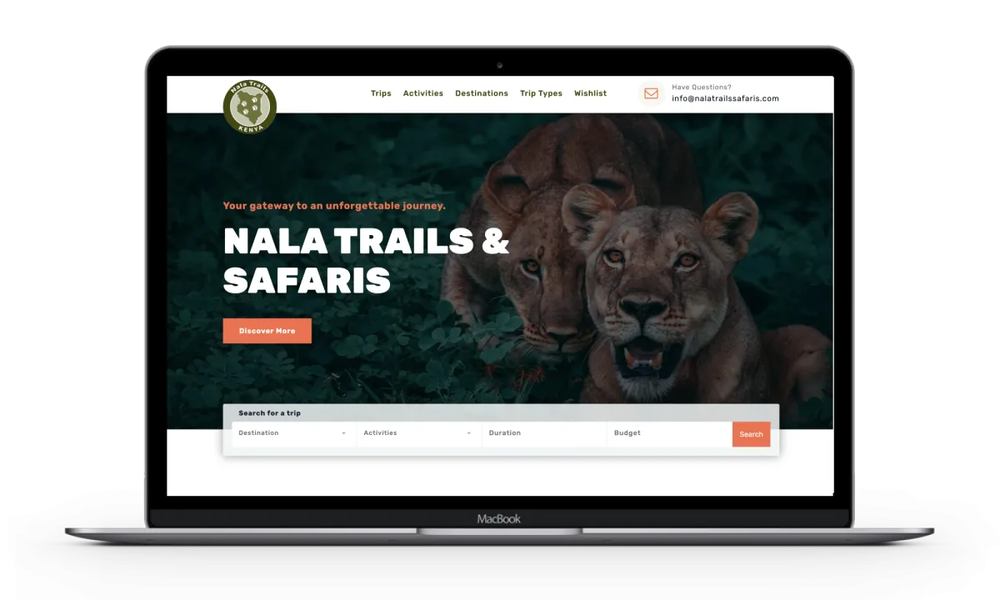
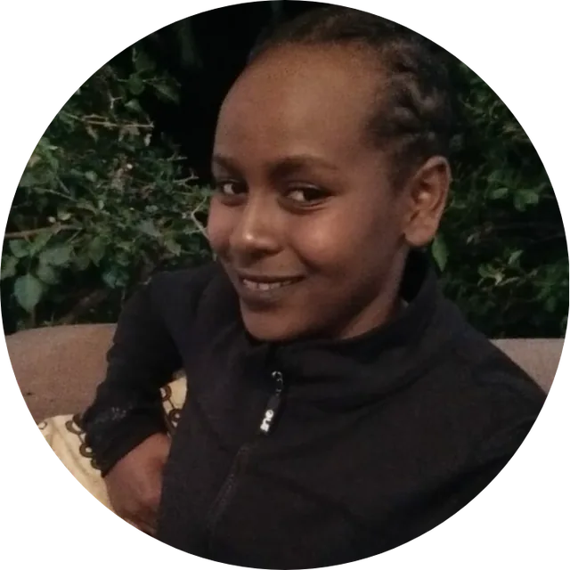
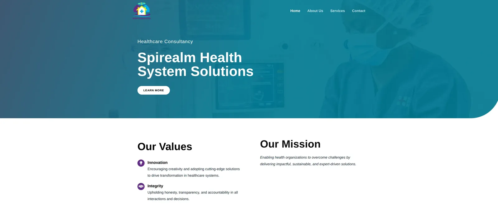
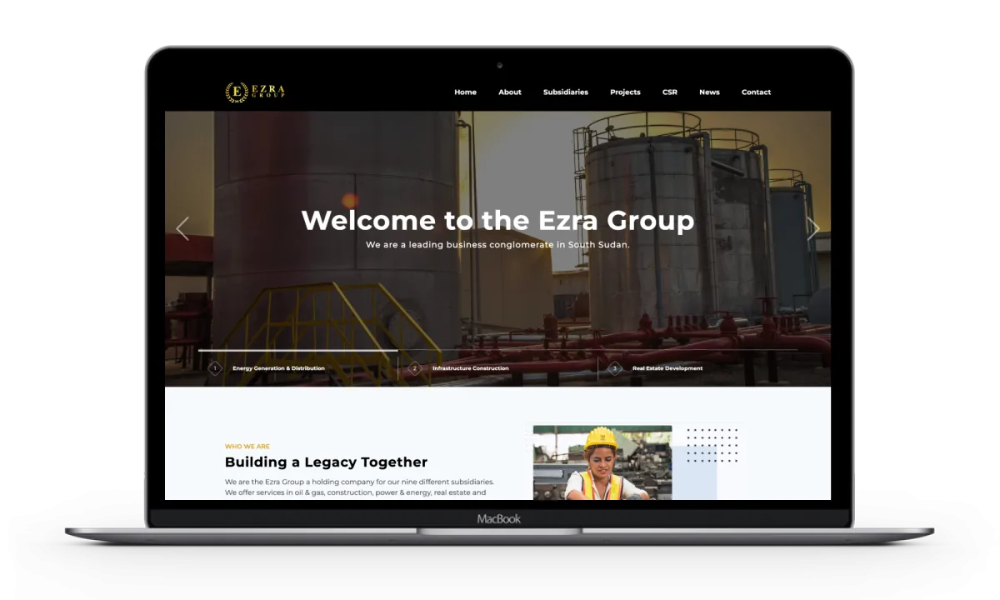

Nala Trails Safaris
Safari tour operator, Kenya · WordPress
A safari booking site built around one question travellers actually ask: which trip fits my destination, activities, time and budget?
Read the case study: Nala Trails Safaris →
Front-end developer building fast, responsive websites — and keeping them running after launch.
I'm Mary Muthoni Garachu. I studied exercise and sport science before I wrote my first line of code; these days I build interfaces with JavaScript, React and WordPress, and look after the sites I ship.

Recent client sites. Each one has a short write-up of what the client needed and what I built.
Safari tour operator, Kenya · WordPress
A safari booking site built around one question travellers actually ask: which trip fits my destination, activities, time and budget?
Read the case study: Nala Trails Safaris →
Healthcare consultancy
A clear, calm front door for a consultancy that helps health organisations work through system-level problems.
Read the case study: Spirealm →
Business group, South Sudan
A corporate site that has to introduce a holding company and its subsidiaries across energy, construction and real estate.
Read the case study: Ezra Enterprise →
I didn't take the straight lane into software. I spent five years studying how people train, adapt and improve, then taught myself to build for the web the same way: pick a target, practise against it, get feedback, go again.
2014–2019
Bachelor's degree, Kenyatta University
Where it started. A degree in how performance is built: structured training, measurement, and steady improvement over time — habits that turned out to transfer well beyond sport.
2021
Self-directed practice projects
My first drills were rebuilds of real production sites, page by page, to learn how professional interfaces are put together.
2022
M-TIBA
My first time on a production team. I provided technical support and worked on improvements to the platform's portals using TypeScript, Angular and MySQL.
2023–2024
ALX Africa, July 2023 – July 2024
A year of fundamentals underneath the browser: C, Python and JavaScript, followed by a specialisation in front-end or back-end development.
2024 onward
Client projects
Working on websites for clients — including Nala Trails Safaris, Spirealm and Ezra Enterprise — from building pages to technical support, and keeping sites secure, fast and up to date.
Grouped by what I've actually shipped with them, not by a percentage.
Responsive layouts and front ends for client sites, the Andela and CarePay rebuilds, and the previous React version of this portfolio.
Client sites built on WordPress, such as Nala Trails Safaris, plus the ongoing updates, fixes and support that keep them healthy.
TypeScript, Angular and MySQL on M-TIBA's platform portals; C and Python at ALX, including a Unix shell and an AirBnB clone.
Shared repositories and sprint-based work during the M-TIBA internship and ALX's collaborative projects.
Need a site built, fixed or looked after? Email is the quickest way to reach me.
garachu.muthoni@gmail.com